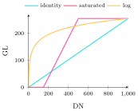

Method
- Linear: , with , : a translation and a scaling of the histogram.
- Linear with saturation: taken at percentiles (e.g. 2% and 98%); values outside are clipped to 0 or 255. A few very bright pixels (clouds, metal roofs) no longer waste the range.
- Piecewise linear: different slopes for different DN intervals, to favour the interval of interest (water vs land).
- Nonlinear: expands dark tones (useful for SAR amplitude); power laws (gamma) or exponentials expand bright tones; equalisation is the data-driven nonlinear case.
Picture

Example
lo, hi = np.percentile(band, [2, 98])
gl = np.clip(255 * (band - lo) / (hi - lo), 0, 255).astype(np.uint8)Intuition
Stretching spends the display's gray levels where the data are, instead of on empty parts of the range.
Pitfall
Stretching each band separately for a colour composite changes colour balance between images: two composites stretched independently cannot be compared by colour.